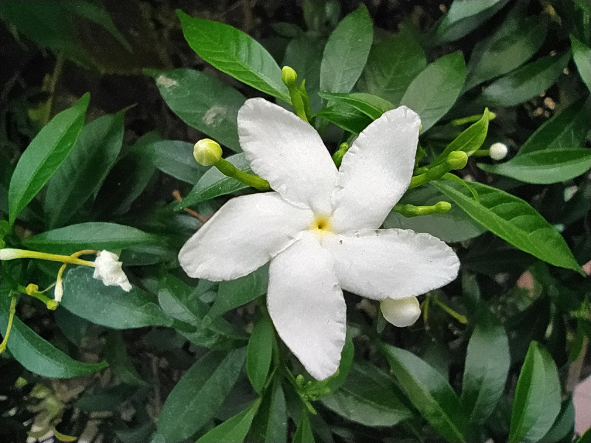
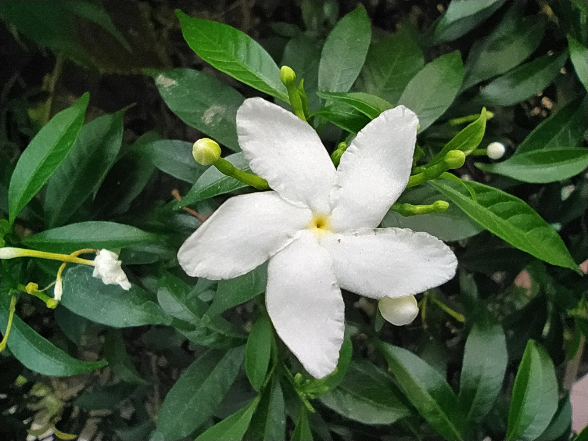
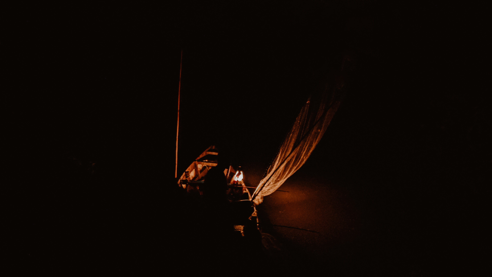
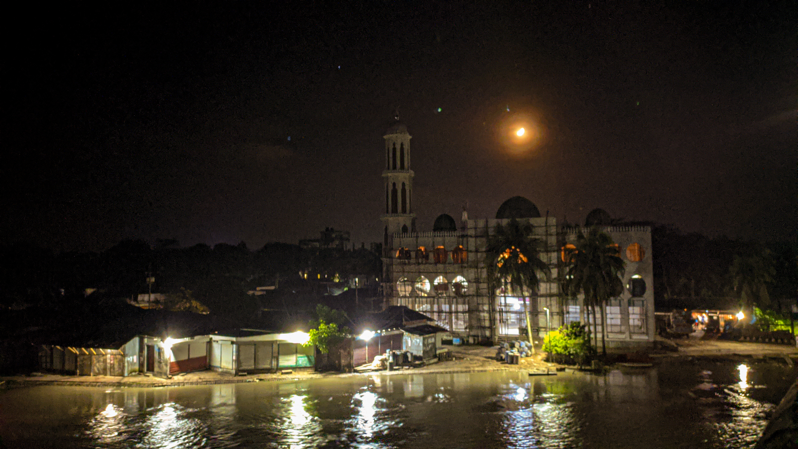
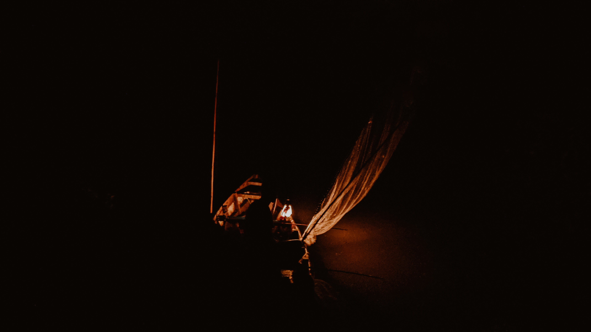
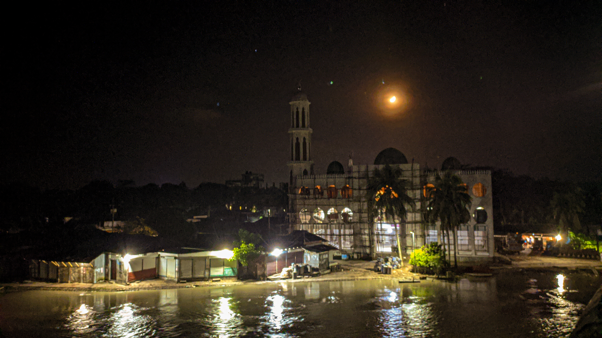

PHOTOGRAPHY
B Y F A Y S A L A H M E D
Hi! I'm Faysal Ahmed
Welcome to my Photography Blog
Faysal Ahmed is a socially renowned photographer with 10+ years of practical photography experience. He started his journey as a photography enthusiast in 2011 while pursuing Mass Communication. After working for 5 years as a Digital Marketing professional, he quit his job to become a full-time Photographer and a Content Creator. Faysal is currently associated with Canon as a Canon Maestro and has worked with Amazon and Unsplash to generate photography-centric informative content. His aim is to spread the knowledge about photography across the country.
 


 


